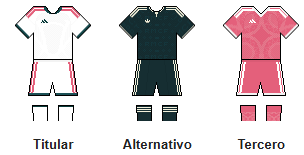

Inicio
El Real Madrid Club de Fútbol, más conocido simplemente como Real Madrid, es una entidad polideportiva con sede en Madrid, España. Fue registrada oficialmente como club de fútbol por sus socios el 6 de marzo de 1902 con el objeto de la práctica y desarrollo de este deporte, si bien sus orígenes datan del año 1900.
Identificado por su color blanco, del que recibe el apelativo de «blancos» o «merengues», es uno de los clubes profesionales de fútbol de España cuya propiedad pertenece a sus socios. También participa desde 1929 en la Primera División de España.
En cuanto a los logros deportivos, es una de las entidades más reconocidas del mundo. El club ha conseguido numerosos títulos nacionales e internacionales y ha sido reconocido por diferentes instituciones deportivas. El Real Madrid es uno de los clubes de fútbol con mayor reconocimiento internacional.
Equipaciones

Referencias
Parte del contenido de esta página está basado en el artículo sobre el Real Madrid de la Wikipedia en español.
Artículo del Real Madrid en Wikipedia